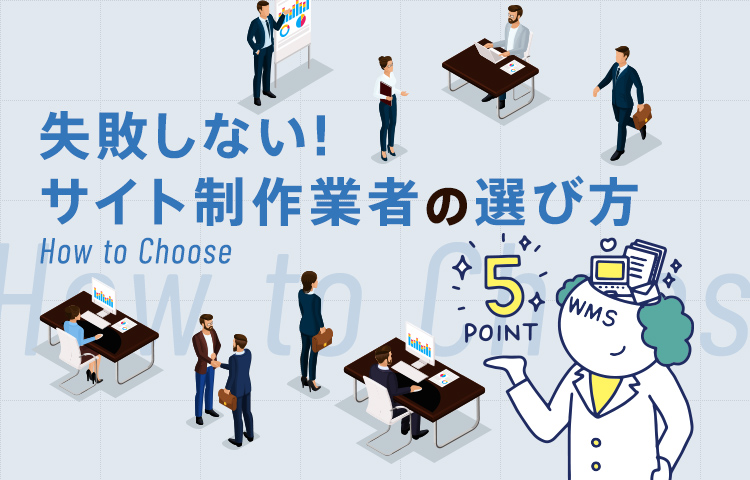
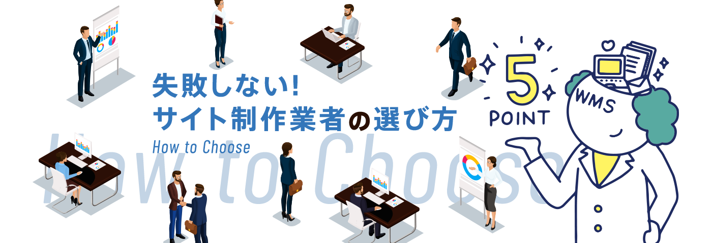

サイト構築のための業者を選ぶのに、自社に近い実績があるかどうかばかりで探していませんか。
HP制作で成果を上げるために失敗しない業者選びには、実は５つのポイントがあるのです。
敏腕プロデューサーMr.WMSがぐぐっと前のめりで解説します。
コミュニケーションツールを
適切に活用
相互理解・情報共有のためのミーティングに積極的
（ずいぶんドライだけど信用していいのかなぁ…）
実際に話すことを控えがちな業者は、まずおすすめできません。関係者が集まって話すことで、真意が初めて伝わったり、問題解決の糸口や新しいアイデアが見つかることはよくあります。文章だけでは伝わりにくい反応や考えを汲み取ることに積極的な業者だから、満足のいくWEBサイトの構築ができるのです。
コロナ禍以降、オンラインミーティングが一般的になり、リアルが難しくても、会話は容易になりました。重要なシチュエーションでの深い相互理解を重視し、フットワーク軽く対応してくれるサイト構築業者を選びましょう。
大事な内容は、記録が残る形で伝えてくれる
（言った言わないの話になってきたなぁ）
関係者が集まる直接ミーティングは、相応のコストもかかります。しかし、それにより、結果的に時間的・コスト的にも優れた成果が期待できるのです。
とはいえ、何でもかんでも口頭で話して終わりというのも困ります。コミュニケーション手段は適切な使い分けをすることが大切。細かい情報を大量に伝えるには、記録が残るメールなどが向いています。ミーティングと文書など、適切なツールを選択できる業者であることは、選択の重要なポイントです。

クライアントの業務を理解し
WEBで表現
クライアントの業務やターゲットなどを理解している
（うちの仕事とは、なんだかイメージが違うぞ）
成果が上がるサイトを作るには、業者が、業務内容をはじめ、歴史、信念、ターゲットやお客様といった情報までに渡って理解することが大変重要です。しかし、これを置き去りにしてしまう業者も少なくありません。業者側のプロデューサーやディレクターが、「通訳」となり、しっかりとした理解を自社のデザイナーやプログラマーに伝える。
その仕組みができていて、プロジェクトに関わるスタッフ全員に理解が浸透していれば、思い描いている以上の発展的・理想的なWEB構築が期待できるでしょう。
ネット用語の「通訳」としても頼れる
（理解できないし、こっちの要望も伝えられないよ）
理解の上で構築されたWEBは、貴社のブランド力を強める、最も優秀な営業マンのひとりとなる可能性を秘めています。もちろん一方的に待つだけではなく、お互いの理解や情報共有は必須です。
しかし、ここも、業者のコミュニケーション力が試されるところなので意識してチェックしてみましょう。煩雑で専門的なネット用語に対しての「通訳」として頼れる業者かどうかも、見極めてください。
しっかりしたリーダーと
無駄のない人員で迅速対応
無駄に待たされることがない
（やたら時間がかかっているけど大丈夫かな）
サイトを制作する際に、必要以上にクライアントを待たせてしまう業者もいます。その原因のひとつが、案件に関わる人数が多すぎること。内部で伝言ゲームが繰り返されているのが実態で、時間を浪費する上に情報が正確に伝わらないトラブルさえ起こしがちです。
適切な人数で効率よくプロジェクトを進める業者は、仕事にスピード感があり伝達ミスも抑制します。更新やトラブルへの即応力があるか、返事を無駄に待たせないか、というのも、業者選びの重要なポイントです。
しっかりとした責任者がいる
（責任の所在がはっきりしなくて、話が進まないぞ）
責任の所在が明確でないまま仕事を進める業者が、プロとして良いWEBサイトを作れるはずがありません。技術に詳しい、指示が的確、人望が厚いなど、優れたリーダーの素質はさまざまです。それらを駆使して実践力や決断力を発揮し、しっかり責任をもって進めるリーダーがいるかどうかで仕事の質が変わります。
業務を進める上での責任所在がはっきりしている業者なら、安心してサイト構築も任せられます。適正な人材で貴社の思いや状況に合わせた対応をしてくれる業者を、選びましょう。
得意分野があって頼りがいがある
得意な分野を明確にもっている
（もともと苦手な分野だったんだな。そりゃないよ）
業者によって、エンターテインメント系BtoCサイト構築を得意としているのか、アカデミズム系BtoBサイト構築を得意としているのかなど、得意不得意もあります。それをはっきり伝えてくれる業者なら、依頼する方も迷うことはないでしょう。
サイトのジャンルだけではなく機能的なことについても、得手不得手はあるものです。あれもこれもと広く浅くサイト構築している業者ではなく、目的に合致した得意分野に強力な自信を持っている、そんな業者を選ぶのがよいでしょう。
根拠あるNOは伝えてくれる
（こっちは素人だよ。効果ないなら教えてよ）
適切な形でNOを言ってくれる業者を選ぶことも、とても大切です。ターゲットにあわせた見せ方、デザイン、言葉の使い方など、実力のある業者は、プロとしてのしっかりしたノウハウをもっています。誠意のもとにそれを伝える業者は、とても頼りになるはず。
実績はひとつのものさしですが、業者の姿勢や理念に共感できるところがあれば、積極的に相談してみることをおすすめします。きっと目的にあわせて成果を出すために、愛ある「No」を提言してくれることでしょう
より良いWEBサイトへの
想いと技術がある
サイトをとことんよくする意欲がある
（こんなサイトしか作ってもらえないの？）
サイトづくりでは、アイデアが行き詰まってしまうこともあります。しかし、想いを受け取って、伝わるサイト、より良いサイトを作りたい、という業者のモチベーションが、画期的なアイデアを引き出すのです。「クライアントのビジネスに貢献する。読者の役に立つ、既存のサイトを超えるものを、クライアントとの協業で産みの苦しみを乗り越えて作る！」そのような想いを感じる業者を選ぶことを、ぜひおすすめします。
モチベーションがモチベーションを呼び、相乗効果を生み出す結果につながるのです。
あと一歩を惜しまない
（お金も時間もかけたのに、まさか失敗!?）
クリエイティブな世界では、厳密に言えば仕事に終わりがありません。もっと見やすい構成はないか、伝わるキャッチにならないか、マッチした写真素材はないか。そのような「あと一歩」の積み重ねが、違いを生みます。
せっかくのサイト構築ですから、他人事のように行き詰まりをそのままにして、サイトを作るような残念な業者は選ばないようにしたいものです。仕事により良い成果を求める業者を、探してください。
ウェブマスターズは、コミュニケーションを大切に、上記５つのポイントをすべて満たしていると自負しております。
本気のご相談に、本気でお応えいたします。
お問い合わせ、心よりお待ちしております！